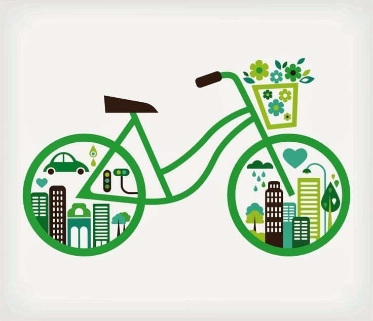

Conceptos de la ciencia de datos

Aquí encontrarás los conceptos más utilizados en esta disciplina.
Casos de aplicación

La ciencia de datos permite identificar patrones de desigualdad social mediante el análisis de grandes volúmenes de información, aquí encontrarás casos de aplicación enfocados en políticas públicas, salud pública y movilidad urbana.
Políticas públicas
Evaluar qué programas funcionan y dónde se necesitan más recursos.
Salud pública
Detectar patrones y anticipar necesidades de atención en la población.

Movilidad urbana
Entender cómo se mueve la gente para mejorar el transporte en la ciudad.
Tutoriales

En esta sección podrás encontrar tutoriales para replicar en tus propios proyectos de ciencia de datos.
- Primeros pasos con Python para datos Empezar roadmap
- Primeros pasos con SQL Empezar roadmap
- Visualización de datos con Python Empezar tutorial
Noticias

Las últimas noticias relacionadas con la ciencia de datos.